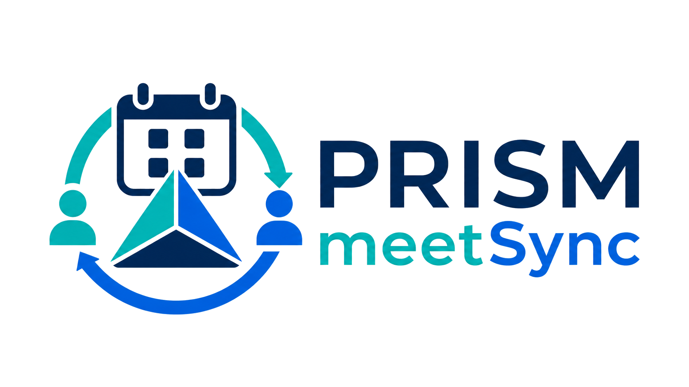

PRISM-HU 事務支援
PRISM meetSync
教室・研究室の会議日程調整を、1つのURLで完結できるWebツールです。 重要な先生方の予定を先に確認してから全参加者へ打診する、といった複雑な調整もウィザード形式で進められます。

こんな日程調整で困っていませんか？
会議の日程調整は、思った以上に手間がかかります。TONTONでまず教授の都合を聞き、次に准教授、さらに出席者十数名の出欠を確認し、候補日を絞り、確定メールと前日リマインドを送り、欠席者の資料も集める。何度もメールやフォームを行き来しているうちに、いま誰の回答待ちなのかも見えにくくなります。
PRISM meetSync（ミートシンク）は、こうした段階的な調整業務を1つのツールで完結させるシステムです。共有のポータルURLから、運営担当者も参加者も調整の進捗、確定した日程、資料共有の状況を確認できます。
BASIC
日程調整の面倒な往復を、ひとつの流れにまとめます。
運営担当者の設定、参加者の回答、日程確定後の通知までを、教室単位で扱いやすくします。
重要な先生方から先に確認
まず少人数の都合を確認し、候補を絞ってから全参加者へ出欠を打診できます。
URLを開いて ○ △ × を選ぶだけ
参加者はアカウント登録なしで回答できます。コメント欄もあるため、遅刻や条件付き参加も拾えます。
確定通知と前日リマインドを自動送信
日程確定後の連絡と前日案内を自動化し、メールの送り忘れを防ぎます。
会議ごとの共有フォルダを作成
Google Drive に会議単位の資料フォルダを作成し、資料アップロード案内にも対応します。
参加者構成を保存
定例会議のメンバーをテンプレート化し、毎回の設定作業を減らします。
複数会議を並行管理
会議ごとの状態を一覧で確認し、調整中・確定済みの会議をまとめて扱えます。
OPTIONS
必要な機能だけ、会議に合わせて追加できます。
使わない機能は表示されません。教室の運用に合わせて、最小構成から始められます。
通知専用アドレス
調整には参加しないが、決定した日程と前日リマインダーだけ受け取ってほしい相手を登録できます。
資料アップロード案内
確定通知メール・前日リマインダーに参加者ごとの個人URLを記載し、資料提出を集められます。
Google Meet URL の自動配信
前日リマインダーメールにオンライン会議URLを自動掲載できます。
Slack 通知
日程確定時に指定チャンネルへ、不参加者やコメント一覧つきで通知できます。
SCREENS
実際の画面イメージ
運営担当者側と参加者側の主な画面を抜粋しています。

運営担当者の管理画面
複数の会議をカード型メニューで並行管理できます。調整中、確定済みなどの状態が一目でわかります。

参加者の出欠回答画面
参加者はメールに届いたURLを開き、○ △ × を選ぶだけ。Google等のアカウント登録は不要です。

回答状況の集計
誰が出席可能で、誰が欠席かを一覧で確認できます。参加者コメントも同じ画面で拾えます。

確定通知メール
日程が確定すると、参加者全員へ資料アップロードURL付きの通知メールを自動送信できます。
FLOW
利用開始までの流れ
-
お申し込み
下記フォームからお申し込みください。Google アカウントの作成代行も承ります。
-
セットアップ
PRISM-HU のシステム管理者がシステムを構築し、運営担当者用のURLをお渡しします。
-
初期設定
運営担当者がURLにアクセスし、ウィザードに沿って組織名・参加者を登録します。
-
運用開始
会議を作成し、参加者に打診メールを送信。回答集計・日程確定・リマインドまで自動で行われます。
対象
- 北海道大学の教室・研究室・プロジェクトチーム
- 定期的な会議の日程調整に手間がかかっている方
- メールのやり取りを減らしたい運営担当者の方
必要なもの
研究室・教室の Google アカウント（Gmail） が必要です。アカウントの作成代行も承ります。
FAQ
よくある質問
参加者は Google アカウントが必要ですか？
いいえ。参加者はメールで届くURLをクリックするだけで回答できます。ログインは不要です。
1つの教室で複数の会議を並行して調整できますか？
はい。会議ごとに独立して管理でき、テンプレートを使って素早く新しい会議を作成できます。
途中で参加者を追加・削除できますか？
はい。調整中でも運営担当者が管理画面から自由にメンバーを変更できます。
データはどこに保存されますか？
お申し込み時に用意する Google アカウントの Google スプレッドシートに保存されます。他の教室からはアクセスできません。
Slack 通知は必須ですか？
いいえ。Slack を使っていない教室では設定不要です。Slack を使う教室は、Incoming Webhook URL を1度だけ登録すれば、日程確定時に指定チャンネルへ自動投稿されます。
資料のアップロードはどのように行いますか？
参加者には自分専用のURLがメールで届きます。そのURLからファイルを直接アップロードできます。アップロードされた資料は会議ごとの Google Drive フォルダに自動整理されます。
ご利用にあたって
- サービスの提供
PRISM meetSync は、PRISM-HU が北海道大学の教室・研究室向けに無償で提供する会議日程調整ツールです。 - データの管理
会議データは、お申し込み時にご用意いただく Google アカウントの Google スプレッドシートおよび Google Drive 内に保存されます。 - 運営担当者の責任
運営担当者用URLには会議の作成・確定・メール送信などの権限が含まれます。URLの管理は運営担当者の責任において行ってください。 - 免責事項
PRISM-HU は安定的な運用に努めますが、Google サービスの障害・仕様変更等に起因する不具合について責任を負いかねます。 - 利用の停止
ご利用が不要になった場合は、PRISM-HU までご連絡ください。システムの停止およびデータの削除を行います。 - 変更について
本ガイドラインは、サービスの改善に伴い変更されることがあります。変更時は本ページにて告知します。
お申し込みをもって、上記の内容にご同意いただいたものとします。
まずは利用希望をお知らせください。
通常 5営業日前後 でセットアップを完了し、運営担当者用URLをメールでお送りします。
MANUAL
操作マニュアル
初回セットアップの手順から、会議の作成・調整・確定まで、画面ごとに確認できます。
RELATED
関連ページ
PRISM-HU の事務支援ツールや、ほかの自動化事例もあわせて確認できます。
CONTACT
お問い合わせ
PRISM-HU 事務局
prism-hu-office@pop.med.hokudai.ac.jp
件名に「meetSync」と記載いただけるとスムーズです。